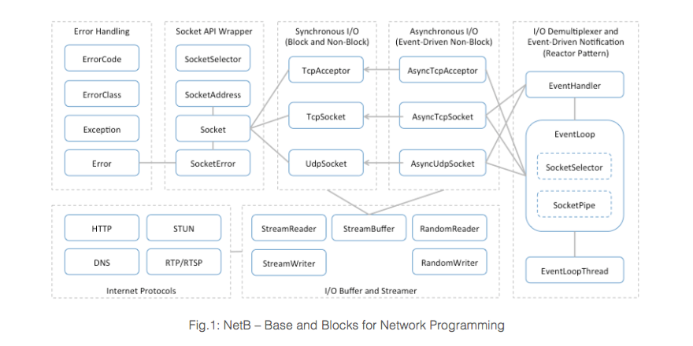
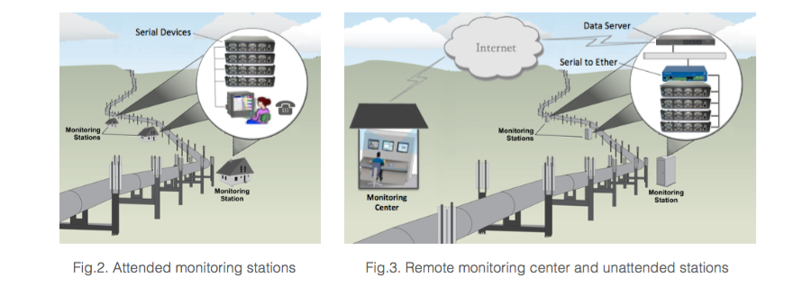
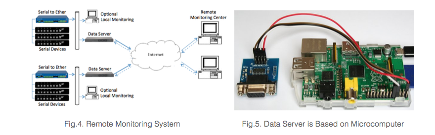
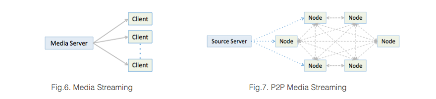
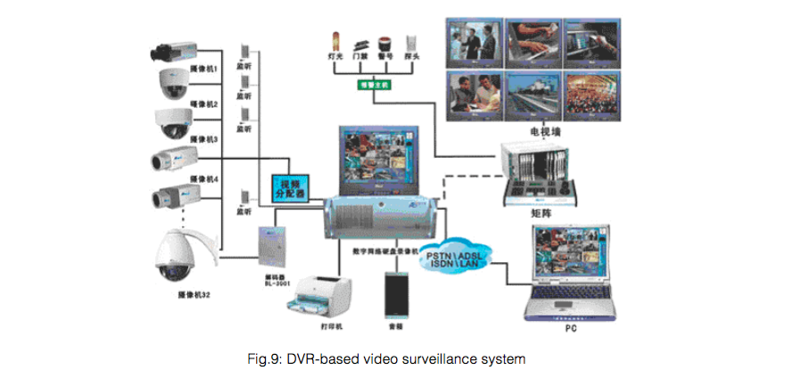

An open-source C++ library for network programming (NetB)
NetB was originally initiated as my class project for Computer Networks, when I was a student at the George Washington University. It has been evolving as the result of my practice-based learning of network programming, which involves object-oriented design and design patterns, C++ exception handling, socket API, asynchronous I/O with socket de-multiplexing and event-driven notifications (reactor pattern), I/O buffering, important Internet protocols and protocol message serialization. NetB is not a software framework; it was designed as a C++ library consists of the components useful for assembling network applications (Fig.1).
NetB has been now released as an open-source software library under GPL license. The repository of source code and documents is at https://github.com/maoxuli/netb. It is still under development and there is no guarantee for the stability, but you may use it as a good example or a code base for network programming. NetB will supports the major operating systems for server, PC, mobile device, and microcomputer (Raspberry PI).
Real-Time Remote Monitoring and Peer-to-Peer VPN
Typical remote monitoring system used in industry is based on local communication links such as RS422/RS485 serial bus or RF signal channels. A local monitoring station can connect a certain number of electronic sensors and cover a limited distance. Larger system usually means more monitoring stations and more attendants (Fig.2). I had worked in a team (as consultant and contract software engineer) to develop a remote monitoring system based on public Internet, which supports a large number of unattended monitoring stations with a single remote monitoring center (Fig.3).
Serial to Ethernet devices deployed in unattended monitoring stations receive monitoring data from local communication links and multicast it to a group on local Ethernet. We developed a data server based on a headless microcomputer (Raspberry PI) to filter and forward requested monitoring data from local network to remote monitoring center over public Internet (Fig.3-5). I was in charge of the development of software running on data server, as well as the SDK used for development of software running in the monitoring center. It involves socket programming for UDP protocol and multicasting, as well as a high-efficient model for packet filtering and forwarding.
In addition, we developed a dedicated VPN (virtual private network) system to enhance the network security and performance. The VPN works in peer-to-peer (P2P) sytle and in most cases it can establish direct UDP connections across public Internet for devices behind NAT (network address translator), which is a guarantee for high throughput and low latency. My work involves TUN/TAP virtual network interfaces, NAT traversal with STUN/TURN/ICE and UDP hole punching.
Live and On-Demand Peer-to-Peer Video Streaming
Typical media streaming systems deliver content to clients directly from media server, constantly. Bandwidth cost had limited applications deployment and system expansion (Fig.6). I had led a team to develop a peer-to-peer (P2P) media streaming system that supports low-cost streaming media. All clients in the system work as equal peer nodes simultaneously functioning as “clients” and “servers” to the other nodes. Media content is sliced into pieces by source server, and then content pieces are delivered from server to nodes or from nodes to nodes as requested, rather than constantly (Fig.7).
A node has a playing position and caches a range of content around its current position. Distance of two nodes is the difference of their playing positions. Each node keeps a list of peers (other known nodes) that sorted on the distance. A node distributes its cache information periodically to neighbors (some nearest peers), and forwards received cache information to neighbors too (Fig.3). Nodes always try to download content pieces firstly from partners (selected neighbors), and only turn to server when a slice cannot be delivered in time from partners. Nodes schedule downloading from partners or from server based on the maps of content availability updated by partners. In addition, nodes also report their cache information periodically to a tracker sever, so that the tracker server keeps a complete list of nodes and their cache information. When a node just joins the system or in any emergent situations, it may fetch an initial list of peers from the tracker server (Fig.8).

We had also developed a web-based application to provide live and on-demand video streaming service, which supports both traditional media streaming system and our P2P media streaming system as backbone. The application consists of web portal, users management, and advertisement management. I worked as a director to contribute to product requirements, system design, and daily management of software development (Fig.8).
Digital and Network-Based Video Surveillance
I spent the first 5 years of my career as a software developer in the area of video surveillance, during its latest technology shift from analog CCTV (closed-circuit television) surveillance to full digital, network-based video surveillance systems. I started from very basic work: C++ coding, debugging, and software versioning, in which, however, I got access to the entire source code and documents of a well-designed modern video surveillance system and I could thereby explore and understand every details of the software in a short term. Basically, the system is centered on a digital video recorder (DVR), with remote access over Internet (Fig.9).
The system supports multiple cameras and various peripheral devices for status detection or control. For example, a video matrix switcher is usually used to switch videos to wall-mount monitors or multi-channel DVR. The peripheral devices are connected to DVR through serial communication links. Videos are captured, digitized, and compressed by DVR, and recorded into files on hard drive. Remote access over Internet is an important extension to local video surveillance. I had developed ActiveX controls and web pages that can work with IE browser to support web style remote surveillance, with which users may connect to DVR over Internet to remotely control peripheral devices, receive real-time streaming videos, or retrieve recorded videos.
I had also led to develop a plug-in style software framework for video surveillance system to support built-in intelligence, such as sound and motion detection, face detection and recognition, adaptive adjustment of video’s dimension, resolution, and frame rate, and any other user-demand functions. Image analysis and processing algorithms are implemented in a series of software plug-ins (filters), which can be chained working as required.